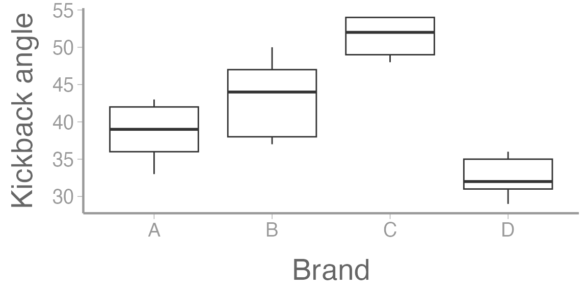

Lab 5: Completely randomized ANOVA
FANR 6750: Experimental Methods in Forestry and Natural Resources Research
Fall 2025
lab05_ANOVA.RmdToday’s topics
- One way ANOVA as a linear model
Using lm()
Using aov()
Performing an ANOVA by hand
Plotting group means and CI’s
Multiple comparisons
One-way ANOVA as a linear model
Questions
Do the means differ and by how much (what are the effect sizes?)
Which means differ from each other?
Formulation as a linear model
Just as we have seen in the last lab, many of the analyses that we will perform this semester can be thought of in multiple ways. A one-way ANOVA can be formulated as a linear model:
Can you define each term in the context of the data? Why did we need to add additional sub-scripting to the observation and residual terms?
Exercise 1
The dataset below comes from a pilot study implemented by the US Forest Service. The service is interested in purchasing a number of chainsaws to use for various projects and fieldwork. Due to safety concerns, the service is hoping to select the chainsaw brand (A, B, C, or D) which has the lowest average kickback angle. Kickback, which refers to the sudden upward motion of the saw’s guide bar when the saw strikes a hard object, is one of the leading causes of injuries during chainsaw work. While the service would like to prioritize safety, their secondary objective is to find a reasonably priced brand. The brands range in price (D,B,A,C) with Brand D being the most expensive.
- Load the sawdata dataset and examine the data
library(FANR6750)
data("sawdata")
head(sawdata)
#> Chainsaw A B C D
#> 1 1 42 38 52 29
#> 2 2 36 50 54 35
#> 3 3 33 44 48 31
#> 4 4 39 37 49 36
#> 5 5 43 47 54 32You may notice that something seems different about this dataset than the previous ones we have looked at over the last few weeks. This is because the data are in what is called ‘wide format’. This means that each level of the grouping variable (in this case chainsaw brand) has gotten its own column in the dataframe. While wide format is often convenient for reports because it allows you to more easily see trends in a table, long format is more useful for succinctly storing data and for use in most analyses.
- Convert the dataframe from wide format to long format1
library(tidyr)
sawdata <- sawdata %>% pivot_longer(cols= c('A', 'B', 'C', 'D'),
names_to= 'Brand',
values_to= 'angle')
sawdata$Brand <- as.factor(sawdata$Brand)- Visualize the data
ggplot(sawdata, aes(x = Brand, y = angle)) +
geom_boxplot() +
scale_y_continuous("Kickback angle")
Using lm()
- Perform the analysis using the lm() function
mod1 <- lm(angle~ Brand, data= sawdata)
summary(mod1)
#>
#> Call:
#> lm(formula = angle ~ Brand, data = sawdata)
#>
#> Residuals:
#> Min 1Q Median 3Q Max
#> -6.2 -2.8 0.5 2.8 6.8
#>
#> Coefficients:
#> Estimate Std. Error t value Pr(>|t|)
#> (Intercept) 38.60 1.80 21.39 3.4e-13 ***
#> BrandB 4.60 2.55 1.80 0.09027 .
#> BrandC 12.80 2.55 5.02 0.00013 ***
#> BrandD -6.00 2.55 -2.35 0.03184 *
#> ---
#> Signif. codes: 0 '***' 0.001 '**' 0.01 '*' 0.05 '.' 0.1 ' ' 1
#>
#> Residual standard error: 4.03 on 16 degrees of freedom
#> Multiple R-squared: 0.784, Adjusted R-squared: 0.743
#> F-statistic: 19.3 on 3 and 16 DF, p-value: 1.45e-05
model.matrix(mod1)
#> (Intercept) BrandB BrandC BrandD
#> 1 1 0 0 0
#> 2 1 1 0 0
#> 3 1 0 1 0
#> 4 1 0 0 1
#> 5 1 0 0 0
#> 6 1 1 0 0
#> 7 1 0 1 0
#> 8 1 0 0 1
#> 9 1 0 0 0
#> 10 1 1 0 0
#> 11 1 0 1 0
#> 12 1 0 0 1
#> 13 1 0 0 0
#> 14 1 1 0 0
#> 15 1 0 1 0
#> 16 1 0 0 1
#> 17 1 0 0 0
#> 18 1 1 0 0
#> 19 1 0 1 0
#> 20 1 0 0 1
#> attr(,"assign")
#> [1] 0 1 1 1
#> attr(,"contrasts")
#> attr(,"contrasts")$Brand
#> [1] "contr.treatment"Can you interpret each estimate? Why are only the last three brands shown (what happened to Brand A)? What does each p-value represent and what hypothesis are they testing?
Using aov()
- Perform the analysis using the aov() function
aov1 <- aov(angle ~ Brand, data = sawdata)- View the ANOVA table
summary(aov1)
#> Df Sum Sq Mean Sq F value Pr(>F)
#> Brand 3 943 314.2 19.3 1.4e-05 ***
#> Residuals 16 260 16.3
#> ---
#> Signif. codes: 0 '***' 0.001 '**' 0.01 '*' 0.05 '.' 0.1 ' ' 1What can we conclude from this ANOVA table? Does there appear to be more or less information (or just different) provided here than when we used the lm() function?
The default output from summary is fine for viewing in
the console but what if you want to include the ANOVA table in a report
or paper? You could manually create a table and copy/paste the values,
but that’s a pain. Luckily, there is a handy package called
broom that turns the output from many model functions into
cleaned-up data frames2:
broom::tidy(aov1)
#> # A tibble: 2 × 6
#> term df sumsq meansq statistic p.value
#> <chr> <dbl> <dbl> <dbl> <dbl> <dbl>
#> 1 Brand 3 943. 314. 19.3 0.0000145
#> 2 Residuals 16 260. 16.3 NA NAIn R Markdown, we can even include that data frame as a nicely formatted table directly in the knitted document:
aov_df <- broom::tidy(aov1)
options(knitr.kable.NA = '') # don't print NA's in table
knitr::kable(aov_df,
col.names = c("Source", "df", "SS", "MS", "F", "p"),
align = 'c', format = "html") | Source | df | SS | MS | F | p |
|---|---|---|---|---|---|
| Brand | 3 | 942.5 | 314.18 | 19.3 | 0 |
| Residuals | 16 | 260.4 | 16.27 |
Getting estimates of group means ( ’s) and SE’s
model.tables(aov1, type = "means", se = TRUE)
#> Tables of means
#> Grand mean
#>
#> 41.45
#>
#> Brand
#> Brand
#> A B C D
#> 38.6 43.2 51.4 32.6
#>
#> Standard errors for differences of means
#> Brand
#> 2.551
#> replic. 5Getting estimates of effect sizes ( ’s) and SE’s
model.tables(aov1, type = "effects", se = TRUE)
#> Tables of effects
#>
#> Brand
#> Brand
#> A B C D
#> -2.85 1.75 9.95 -8.85
#>
#> Standard errors of effects
#> Brand
#> 1.804
#> replic. 5Constructing an ANOVA table by hand
Just as we did in the last lab, we will see below how R
is actually doing the ANOVA and we’ll get practice constructing an ANOVA
table by hand.
Grand mean
(ybar. <- mean(sawdata$angle))
#> [1] 41.45Group means
As with most things in R, there are several ways to
calculate the group means. First, find the group means, the hard
way:
A <- sawdata$angle[sawdata$Brand == "A"]
B <- sawdata$angle[sawdata$Brand == "B"]
C <- sawdata$angle[sawdata$Brand == "C"]
D <- sawdata$angle[sawdata$Brand == "D"]
(ybar.i <- c(mean(A), mean(B), mean(C), mean(D)))
#> [1] 38.6 43.2 51.4 32.6Better yet, use tapply to find the group means (the base
R way):
(ybar.i <- tapply(sawdata$angle, INDEX = sawdata$Brand, FUN = mean))
#> A B C D
#> 38.6 43.2 51.4 32.6Finally, find the group means, the tidyverse way:
library(dplyr)
(ybar.i <- sawdata %>%
group_by(Brand) %>%
summarise(mu = mean(angle)))
#> # A tibble: 4 × 2
#> Brand mu
#> <fct> <dbl>
#> 1 A 38.6
#> 2 B 43.2
#> 3 C 51.4
#> 4 D 32.6Although each of these methods does what we want - return the mean kickback angle for each group - note that they do not return the same type of object.
Use the class() function to see what type of object each
one returns.
When might the output from each method be useful?
Sum of squares
Sums of squares among
# Number of saw brands
a <- length(unique(sawdata$Brand))
# Number of measurements of each brand (note, this assumes balanced design)
n <- nrow(sawdata)/a
SSa <- n * sum((ybar.i$mu - ybar.)^2)
SSa
#> [1] 942.5Sums of squares within3
Plotting group means and confidence intervals
Although we have performed the ANOVA in multiple ways and can conclude that there is at least one difference in means between the chainsaw brands, we still have a few tasks to perform. The first is to plot the data in a meaningful way. With this type of data there are at least two ways we could display the results. An example of one is below; we’ll practice the second one in the homework assignment.
In an ANOVA context, confidence intervals can be constructed using the equation:
# Extract the SE
mean.SE <- 2.551 # hard coded from model.tables()
# OR
table <- model.tables(aov1, type = "means", se = TRUE)
mean.SE <- as.numeric(table$se) # more explicit
mean.SE
#> [1] 2.551
# Compute confidence intervals
tc <- qt(0.975, a*(n-1))
lowerCI <- ybar.i$mu - tc*mean.SE
upperCI <- ybar.i$mu + tc*mean.SE
ggplot(ybar.i, aes(x = Brand, y = mu, fill = Brand)) +
geom_col() +
geom_errorbar(aes(ymin = lowerCI, ymax = upperCI), width = 0) +
scale_y_continuous("Chainsaw kickback angle")
Figure 1: Mean kickback angle from four chainsaw brands with 95% CI
Multiple comparisons
TukeyHSD(aov1)
#> Tukey multiple comparisons of means
#> 95% family-wise confidence level
#>
#> Fit: aov(formula = angle ~ Brand, data = sawdata)
#>
#> $Brand
#> diff lwr upr p adj
#> B-A 4.6 -2.6998 11.9 0.3079
#> C-A 12.8 5.5002 20.1 0.0007
#> D-A -6.0 -13.2998 1.3 0.1276
#> C-B 8.2 0.9002 15.5 0.0251
#> D-B -10.6 -17.8998 -3.3 0.0037
#> D-C -18.8 -26.0998 -11.5 0.0000 Which brands were significantly different from one another? How
would you answer the original question at the start of this
exercise?
Which brands were significantly different from one another? How
would you answer the original question at the start of this
exercise?
Optional exercise (not graded)
A biologist wants to compare the growth of four different tree species she is considering for use in reforestation efforts. All 32 seedlings of the four species are planted at the same time in a large plot. Heights in meters are recorded after several years.
Create an R Markdown file titled “Assignment 3”. Within that document, do the following:
- Create an
Rchunk to load the data using:
Create a header called “Hypotheses” and under this header, indicate, in plain English, what the null and alternative hypotheses are. Also use R Markdown’s equation features to write these hypotheses using mathematical notation
Create a header called “ANOVA by hand”. Under this header, perform an ANOVA analysis (degrees of freedom, sums-of-squares, mean-squares, and F-value) without using
aov(). Compute either the critical value of F, or the p-value. Be sure to annotate your codeCreate a header called “ANOVA in R”. Under this header, perform an ANOVA analysis on the data using the
lm()function and then again using theaov()function-
Under a subheader called “ANOVA results”
indicate whether or not the null hypothesis can be rejected at the level
include a well-formatted ANOVA table using the
broom::tidy()functioncreate a barplot showing the effect sizes and 95% confidence intervals around them
Create a header called “Which means are different?”. Use Tukey’s HSD test to determine which pairs of means differ at the level. Include a few sentences indicating which pairs are different. If there is an inconsistency between the initial ANOVA results and the post-hoc comparisons, explain why that might be the case
A few things to remember when finishing the exercise:
Be sure the output type is set to:
output: html_documentBe sure to include your name in the
authorfield of the headerBe sure to set
echo = TRUEin allRchunks so we can see both your code and the outputSee the R Markdown reference sheet for help with creating
Rchunks, equations, tables, etc.